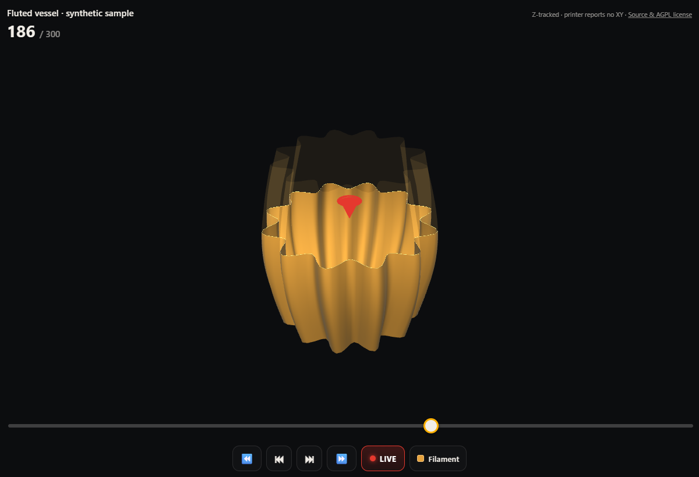
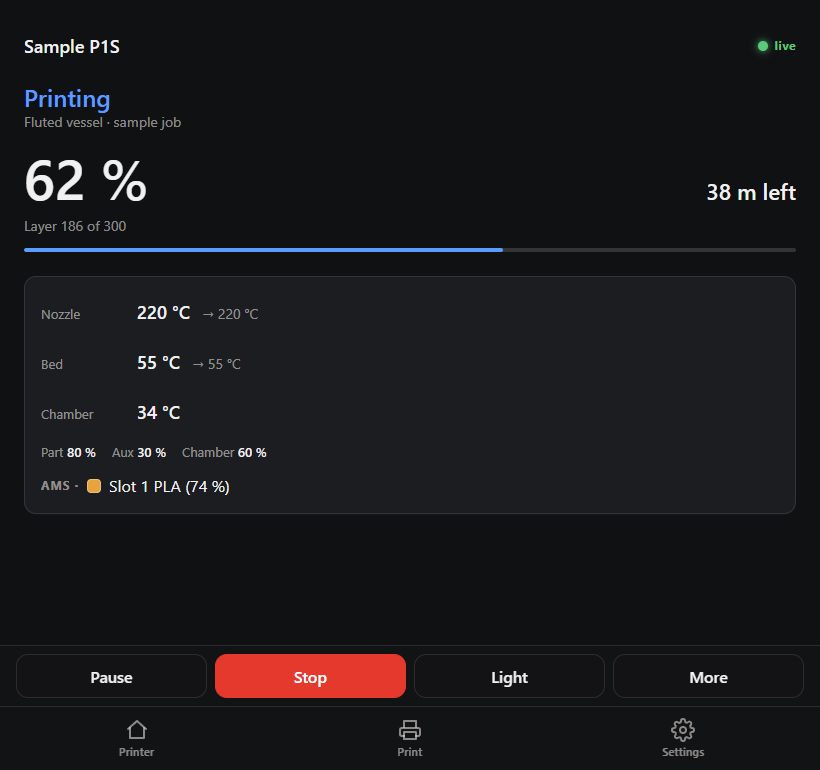

BAMBU BRIDGE / LOCAL PRINTER TOOLS
Your P1S.
One shared endpoint.
Print from Orca with the AMS or external spool, watch the camera, and connect your phone and Home Assistant through one bridge.
Run the bridge on your own server. Reach it over your LAN or Tailscale; it talks to the printer on the printer’s local network.
Independent community software. Not affiliated with or endorsed by Bambu Lab.
{kind=link}

Open full image ↗Your printer, connected with its access code.
See the current layer in the context of the whole job.
Share one bridge across your local clients.
Orca · one P1S endpoint
Four colors from the AMS. Or a job from the external spool. Use the same printer entry, address and native access code in Orca for both.
Bambu Bridge presents your P1S to Orca over a private LAN or Tailscale connection. Upload a sliced job, select its filament source, follow printer status and view camera frames through the bridge.
AMS JOB
Map four colors to four slots.
In Orca’s Print plate dialog, map the sliced filaments to the live AMS slots. The gateway forwards that job’s mapping to the printer.
EXTERNAL-SPOOL JOB
Choose the spool outside the AMS.
Select the external spool for that print. Keep the same endpoint and code—there is no connection to swap or server setting to change between jobs.
A separate Bridge P1S, alongside your printer.
The bridge has its own persistent serial. Your physical P1S keeps its own entry, address and credentials, so local discovery cannot replace the bridge connection. Upgrading from 0.4.0 or earlier? Run a fresh setup command for the new identity.
- Prepare the bridge. Install the v0.4.2 preview and follow the native setup guide to select the server’s private or Tailscale address.
- Set up this computer. In your HTTPS dashboard, open Settings → Connect Orca to your printer and enable Orca access. On Windows, close Orca and copy the setup command. Paste it into Windows PowerShell and follow the prompts; it sets the address, code and certificate together.
- Open Orca and check. Select Bridge P1S in Device, press Play for the camera, then click Check this computer in the dashboard. Printer and camera have separate live checks. Manual setup remains available for macOS and Linux.
The choice belongs to the print. Select AMS or external spool in Orca, then use the Device view for printer status and the shared camera stream.
Preview with live protocol checks. Real P1S AMS/external status, camera JPEG frames, a read-only command response and file listing have been verified. Automated tests cover uploads and print-command forwarding. A completed print through the installed Orca UI remains unverified. Read the validation record.
The bridge has the Tailscale IP
OrcaSlicer
Native P1S printing + camera
Browser + phone
Dashboard + 3D viewer
Home Assistant
Entities + automations
or Tailscale
Bambu Bridge
Looks like a P1S to Orca. Relays uploads and commands, shares status and camera frames, and serves the dashboard and API.
protocols
Physical P1S
Uses its ordinary local network address. Tailscale runs on the bridge host and client computer; it is not installed on the printer.
The browser workspace
{kind=link}

Open full image ↗Know what is happening at a glance.
Progress, remaining time and the current layer sit above temperatures, cooling and AMS information. Pause, stop and light controls stay within reach.
- Print state comes first. Preparing, printing, paused and finished have different status treatments.
- Disconnected data is marked. The dashboard dims old values and shows a reconnecting message when the link drops.
- Camera when available. The full dashboard includes a snapshot camera card and a shortcut to the 3D viewer.
Read the 3D view
Open 3D from the dashboard to orbit the job, zoom in, or scrub through layers. Return to Live to follow the printer’s reported layer.
- Solid below, ghost above. See the reported build height against the complete model.
- Model or sliced toolpath. Mesh geometry is shown when available; supported sliced archives can supply toolpaths instead.
- A progress visualization. The pictured mesh view tracks Z. Its red marker is symbolic; the printer does not report a live XY nozzle position here.
Viewer links can use a separate read-only visualization token, so sharing a view does not require sharing the master API key.
The Android companion
Keep live printer status, camera snapshots, filament tools, and the 3D viewer together on your phone. The app connects to your bridge over your LAN or Tailscale using the same bridge API key.
Android v0.18.3 · ARM64 · Android 7 or newer. Install the signed APK as an update to keep your saved connection and printer settings. A running Bambu Bridge 0.1.3 server is required.
Two ways Home Assistant fits
Integration: bring the printer into HA.
The custom integration connects to your existing bridge using its base URL and API key. Each registered printer becomes a device with status, temperature and progress sensors, a camera and controls.
Use those entities and bridge events in your own dashboards and automations—for example, a notification when a print completes.
Add-on: host the bridge inside HA.
The Supervisor add-on runs the bridge itself on Home Assistant OS. If you already run the bridge elsewhere, point the integration there.
The add-on is installed locally from the supplied source. It and the integration serve different purposes; you still configure the integration to expose entities.
Install and configure
You need a P1S on your LAN, its access code, and a host running Python 3.12 or newer—or the supplied container / Home Assistant add-on setup.
- Prepare the printer. Use LAN-Only Mode and Developer Mode where offered. Review the firmware and access-code limitations in the compatibility notes.
- Start the bridge. Follow the setup guide, configure a bridge API key, and register your printer with its local address and access code.
- Open the dashboard. Connect a browser on your network to the bridge, then add Home Assistant or another client when needed.
git clone https://github.com/thereprocase/bambu-bridge.git
cd bambu-bridgeOpen source / documented boundaries
AGPL-3.0-only. Source, installation guides and the versioned release are public. Third-party notices are retained.
Preview images use the actual application with synthetic data and an original procedural sample model. They are illustrations of the interface, not a live printer session. Automated TLS tests and live P1S protocol checks are recorded separately. Native Orca support is a preview; a completed print through the installed Orca UI remains unverified. Firmware compatibility depends on the documented LAN setup.